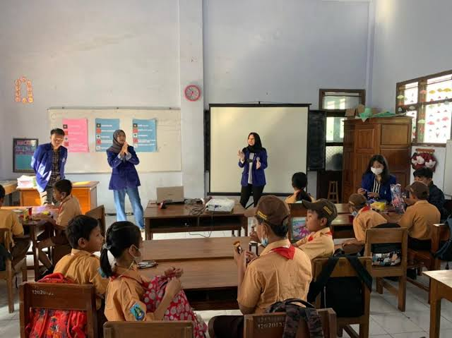
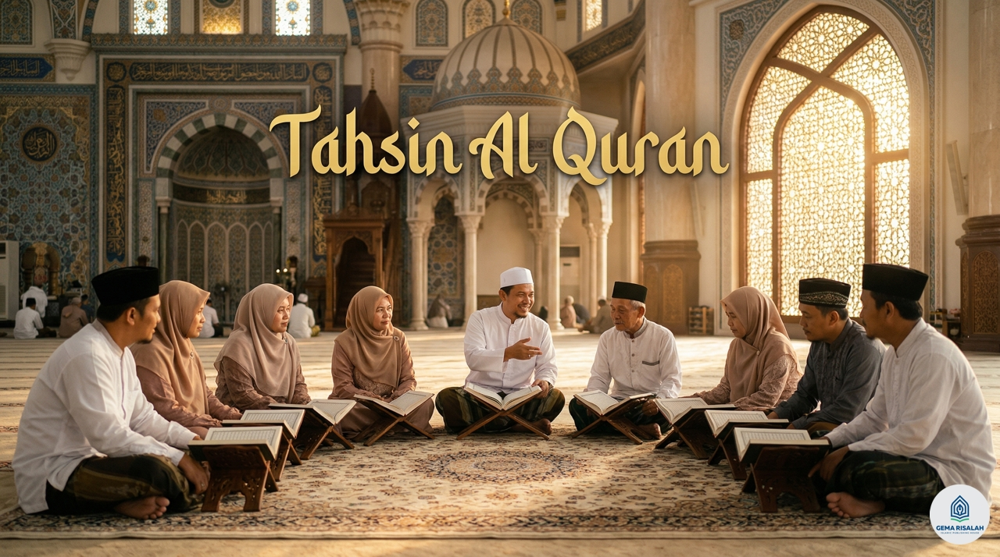
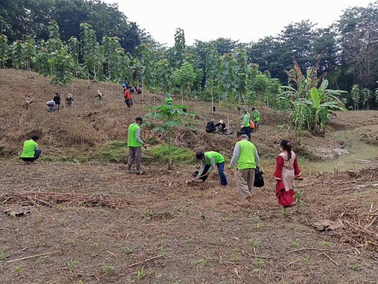
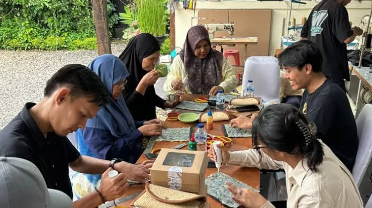
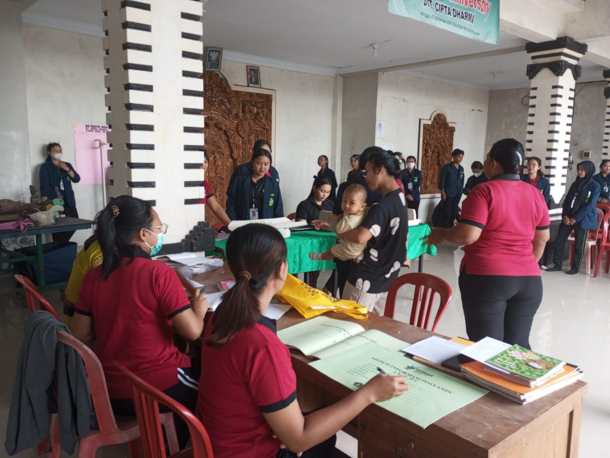
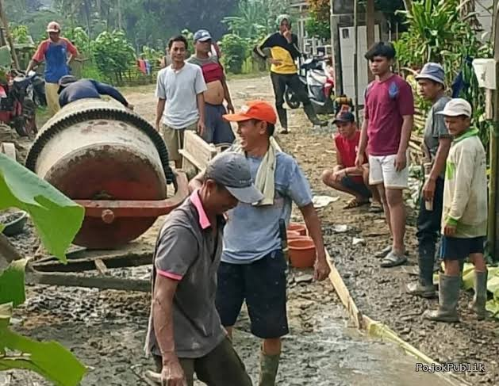

Beranda Program Kerja
Program Kerja
Rangkaian kegiatan yang dirancang untuk merawat alam, tradisi, dan kesejahteraan warga Margawangi.

Bimbingan Belajar Anak Desa
Pendampingan belajar bagi anak-anak usia sekolah dasar setiap sore, mencakup mata pelajaran umum dan pengenalan literasi lingkungan.
Target: 50 anak usia sekolah dasar

Pengajian & Tahsin Al-Qur'an
Kegiatan mengaji rutin bersama anak-anak dan remaja, disertai pembinaan bacaan (tahsin) dan kajian nilai ekoteologi dalam Al-Qur'an.
Target: Warga dan anak-anak Margawangi

Gerakan Tanam 1.000 Pohon
Reboisasi lahan kritis di sekitar desa sebagai wujud nyata ekoteologi, melibatkan warga, karang taruna, dan santri setempat.
Target: 1.000 bibit pohon di lahan kritis

Pelatihan Digital Marketing UMKM
Pendampingan pelaku UMKM lokal dalam memasarkan produk (kopi, kerajinan bambu, olahan singkong) melalui media sosial dan marketplace.
Target: 15 pelaku UMKM Margawangi

Posyandu & Cek Kesehatan Gratis
Kolaborasi dengan kader posyandu setempat untuk pemeriksaan kesehatan rutin bagi balita dan lansia, serta edukasi gizi keluarga.
Target: Balita & lansia Desa Margawangi

Kerja Bakti & Gotong Royong
Kegiatan bersih desa dan perbaikan fasilitas umum yang dilakukan bersama warga sebagai penguatan solidaritas sosial.
Target: Seluruh dusun di Desa Margawangi
Belum ada program pada kategori ini.